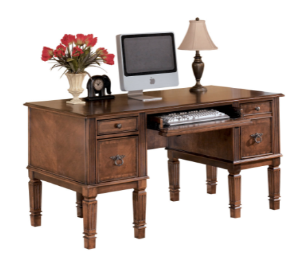
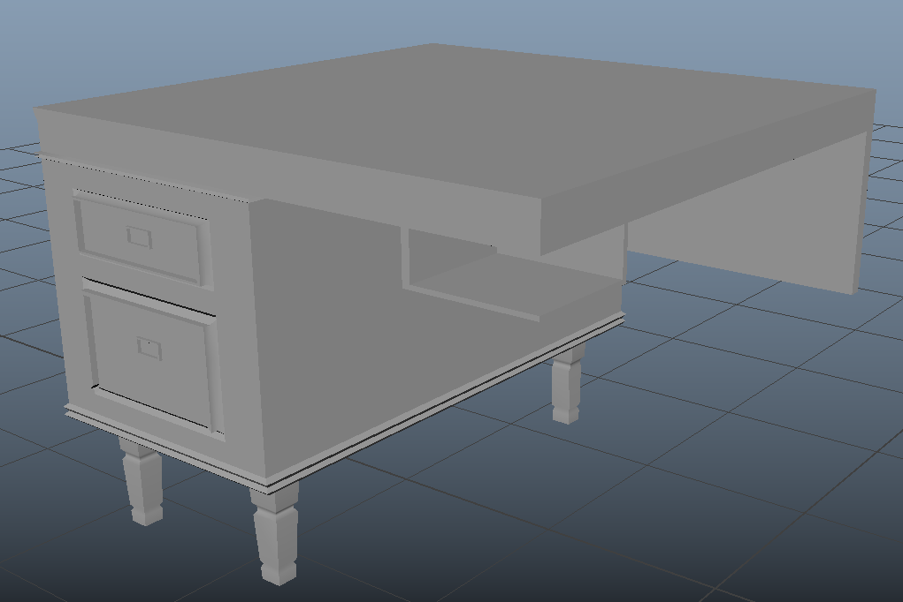
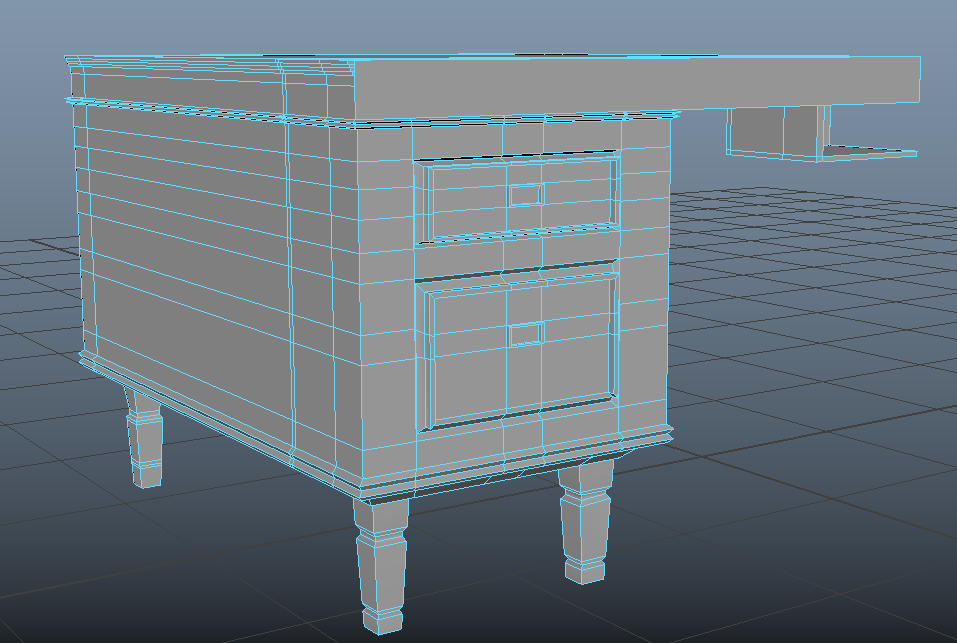
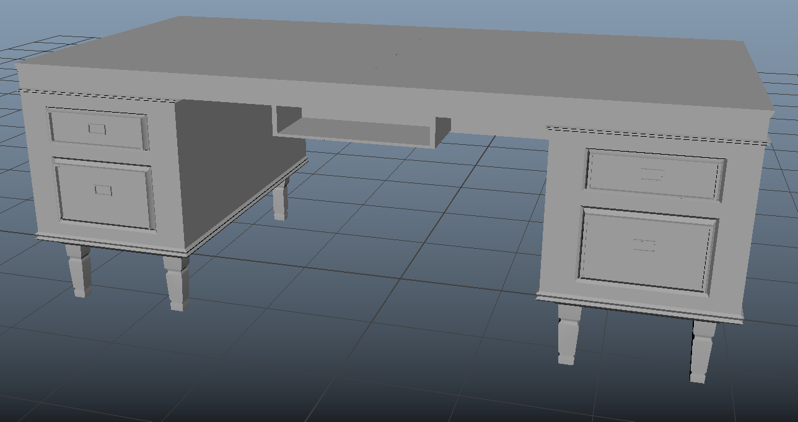
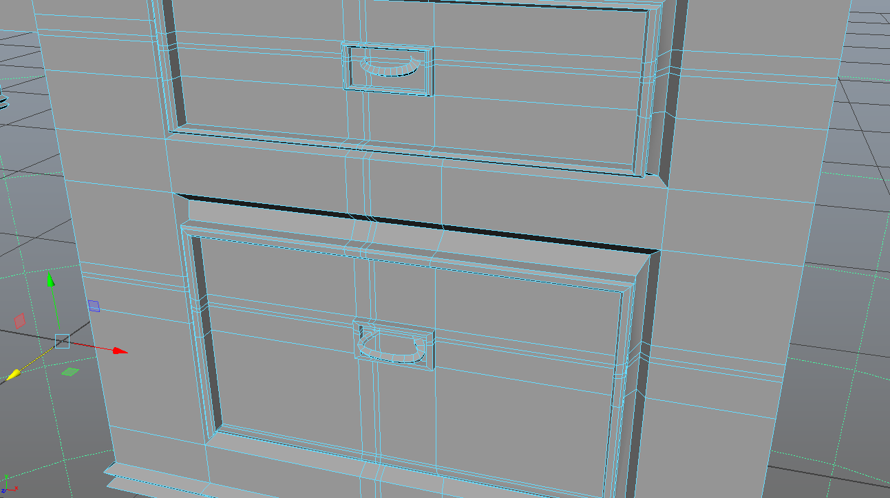

AutoDesk Maya: Polygonal Modeling Toosl
Desk

 The image shown above, is my final output. To create this, I used a cube and resize it to be just the dimensions of the top, so that it would be thin. However, half way through on planning how to create the table I realized that the table is symmetric. Meaning, that I will have to create the exact modifications to the other side that I have done on the first side.
The image shown above, is my final output. To create this, I used a cube and resize it to be just the dimensions of the top, so that it would be thin. However, half way through on planning how to create the table I realized that the table is symmetric. Meaning, that I will have to create the exact modifications to the other side that I have done on the first side.
 This is when I discovered the Mirror Tool, this allows me to only create half of the table and mirror it at -180 degrees. Lessing the workload and making the desk actually look symmetrical. Otherwise, my desk would look like it's badly done if the lower drawer on the left is bigger that the one on the right.

I used insert edge loop tool to create it desk

After I thought I was done with the first half, I just used the mirror tool to
 The handles do not look symmetrical on all drawers because I had to do this one by one and that I could not revert anymore to the model before I mirrored the model.
 I used the bevel tool on the edges of the drawers to create an "angled look."
I used the bevel tool on the edges of the drawers to create an "angled look."